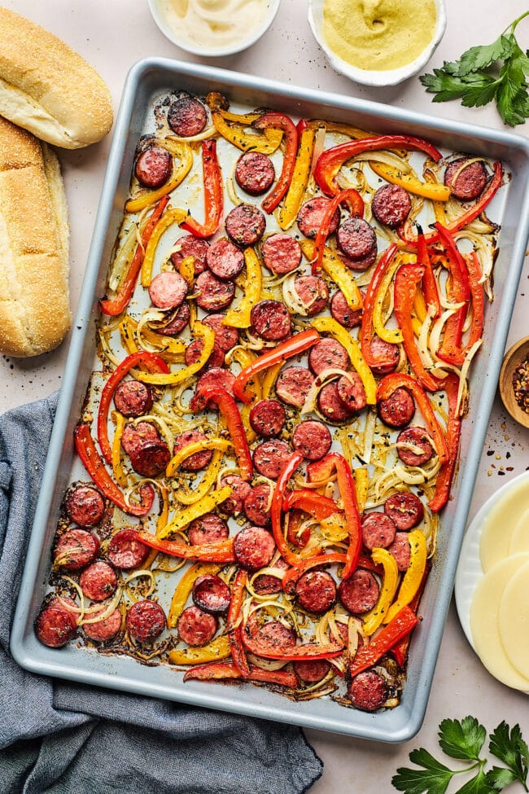

Sheet Pan Sausage and Peppers

Description
A delicious meal that's simple in one sheet pan.
This is a great base. I recommend adding a bag of Knorr Spanish Rice as a side!
Ingredients
- 12 ounces precooked sausage, cut into 1/2-inch rounds
- 1 medium red bell pepper, sliced into 1/4-inch strips
- 1 medium yellow bell pepper, sliced into 1/4-inch strips
- 1 small yellow onion, sliced into 1/4-inch strips
- 1-2 tablespoons olive oil
- 2 cloves garlic, minced
- 1 teaspoon Italian seasoning
- Kosher salt and black pepper, to taste
- Dash of crushed red pepper flakes, optional
- Garnish: fresh parsley or basil, optional
Steps
- Preheat oven to 400 degrees F. Line a large baking sheet with parchment paper.
-
Place the sausage rounds, pepper strips, and onion on the prepared pan.
Drizzle with olive oil. Top with garlic, Italian seasoning, salt, pepper,
and crushed red pepper flakes, if using. Toss well until evenly coated.
-
Arrange in an even layer and bake for 20 to 25 minutes,
stirring halfway, or until vegetables are tender and slightly browned.
- Remove from the oven and serve immediately.
- Serve with your desired side; rice, pasta, or a hoagie sandwich are some suggestions.
Home